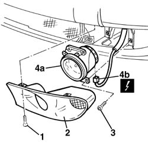

5540D10 l/h or r/h fog lamp (one) - r+r
- Path
- Procedures > 55 ELECTRICAL EQUIPMENT > 5540 EXTERIOR LIGHTING > 5540D fog lamps > 5540D10 l/h or r/h fog lamp (one) - r+r
- Kind
- repair procedure (removal / refitting; the operation number is the code)
- Applies to
- all engines; all production periods
- Interactive page
- https://sloeber94.github.io/elrnDB-a156/en/#/3238467
Applies to: all engines; all production periods
 Removing
Removing
 Refitting
Refitting1. Unscrew the clamping screws of the collar badge.
2. Take the collar badge off.
3. Unscrew the clamping screws of the fog lamp.
4. Extract the fog lamp (4a) and disconnect the electrical connection (4).
 | Name | Connector |
|---|---|---|
4b | Left fog lamp |
| Name | Connector |
|---|---|---|
4b | Right fog lamp |

Applies to: all engines; all production periods
Refitting
RemovingConnect the electrical connection.
Test the functionality of the fog lamp.
Place the fog lamp in its seat.
Screw the clamping screws.
Place the collar badge.
Screw the clamping screw of the collar badge.
If necessary, 5540D38 fog lamp beam - adjust
Topics linked from this page (3)
Topics that link to this page (9)
- 2130A22 cooling radiator of automatic transmission hydraulic circuit - r + r - including fluid level top up if necessary
- 2130A58 Automatic transmission fluid cooling radiator mounting BRACKET - R.R.
- 2130A60 air shroud on automatic transmission fluid cooling radiator - r r
- 5040A20 air conditioner compressor - r+r - includes fluid level check and top up if necessary
- 5040A52 pipe from condenser to dehydrating filter - r+r
- 5040A73 compressor inlet pipe - r r
- 5040A76 tandem pipe for delivery and return from evaporator rr
- 5040B14 air conditioner system multi-level pressure switch - r+r
- 7205E10 Stripping FRONT BUMPER